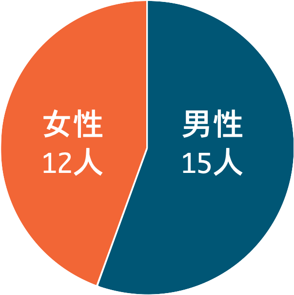

宮﨑ゼミとは
「いかに世の中でICTを活用することができるか」
宮﨑ゼミでは、ITゼミである。したがって、プログラミングやアプリ開発をするゼミであると考えられている。
確かに、このゼミでは、発表はパワーポイントではなく、Webサイトを作成して行う。HTML,CSS,Javascript,Java,C,SQLなどのプログラミング言語の学習をする。
しかし、プログラミングをはじめとする技術については理系の仕事である。
では、ICT分野において文系人材が担うべき役割とは何なのか。それに対する答えをこのゼミで見つけて欲しい。
取り組む課題例/27期
宮﨑ゼミ27期では、27人全員が一つのチームとして2つの課題に挑んだ
「Coolとは何か」
Coolと聞いて、みんなは何を思い浮かべるだろうか。おそらくかっこいい、スマート、寒いといったイメージを持つだろう。
与えられるお題はこれだけである。
これに対してゼミ生総出で自由に答えを出す。

「正しいwebサイトの作り方」
正しいwebサイトとは何なのか。
インターネット上には、webサイトの作り方について多くの記事がある。
しかし、それらの情報は誤りが多い。
何が正しいのか、どうやって作るのか、何もわからない状態から全員で一つの形へ作り上げる。
個性を重視するゼミ
「多様なメンバー」
宮﨑ゼミの男女比率は1:1。
同じタイプのメンバーは存在しない。
全員が異なる役割、性格、強みを持っている。
そのため、自由に好きなことができるだろう

得られる力
- ICTに関する知識
- プログラミング能力
- チームワーク
- グループワーク能力
- リーダーシップ
- 創造力
ゼミ活動、ゼミ外での学習、関連科目等を通じて、大人数/少人数でのグループワークに頻繁に取り組む。
やりたい人はやりたいだけゼミに参加することができる。
メンバーも固定化されていないので、必要に応じてグループが作られる。
このHPを作る作者も一切の未経験であったが、半年でこのようなWebサイトを作れる力をつけることができる。